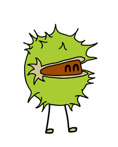

A RubyConf Australia talk by Arne Brasseur
What does it mean?
Why would we want it?
id·i·o·mat·ic \i-dē-ə-ˈma-tik\ adjective
Relating to, or conforming to idiom
From Ancient Greek
ἴδιος ídios
personal, one’s own; peculiar, separate
ἰδίωμα idíōma
a peculiarity, a peculiar phraseology, an idiom
id·i·om \i-dē-əm\ noun
to kick the bucket
I’m pulling your leg
I wouldn’t put it past him
Think: “tiny design pattern”
A method that memoizes
def sum
@sum ||= @left + @right
end
Method pre-condition
def filter_negatives(list)
raise "list can't be empty" if list.empty?
# ...
end
“Eurospeak”
High school language
Rails Ruby
ruby-core Ruby
Seattle.rb Ruby
DataMapper/ROM Ruby
Have evolved over time
def create_method_obj(names, params)
o = Object.new
for idx in 0 ... params.length
o.instance_variable_set('@' + names[idx],
params[idx])
end
o
end
/Content-Disposition:.* filename="?([^\";]*)"?/ni.match(h)filename = ($1 or "")if /Mac/ni.match(env_table['HTTP_USER_AGENT']) and/Mozilla/ni.match(env_table['HTTP_USER_AGENT']) and(not /MSIE/ni.match(env_table['HTTP_USER_AGENT']))filename = CGI::unescape(filename)end
class CGI
def CGI::escape(string)
# ...
end
def CGI::unescapeHTML(string)
# ...
end
end
Conforming to idiom(1)
Sounding “natural”
Takes advantage of the language
Is more easily understood by others
Important for projects
Shared ownership
Reduced cognitive overhead
First, second, and modern era
“The primordial ooze”
Ruby is still very niche
Early adopters from Perl, C, LISP, Smalltalk
Diversity of styles
“Rails runaway train”
Adoption booms through Rails
Idiom crystalizes around Rails
Still lots of flexibility and creativity (_why!)
“They grow up so fast”
Big Rails apps maintained for 5+ years
Desire for best practices, consistency
Wide adoption of a common style
“The parallel track”
Resurgence of a “pure Ruby” crowd
More open to novel approaches
Develop their own idioms
In theory: descriptivist, style guide captures what “the people” do
In practice: well known influencers
Extra hurdle for newcomers
Treating idiom as normative hampers innovation
The only constant is change
When a society changes, its language changes
When it comes into contact with other language groups, its language changes
Distributed systems, parallelization
Concurrency models, type systems
Go, Idris, Elixir, Elm, Rust
Monads, functional composition, transducers, CSP
Unseen in Ruby
Will look unfamliar by necessity
json_string = get_json_from_somewhere
result =
Try { JSON.parse(json_string) } >-> json {
Try { json["dividend"].to_i /
json["divisor"].to_i }
}
maybe_user =
Maybe(user) >-> user {
Maybe(user.address)
} >-> address {
Maybe(address.street)
}
From Call Sheet
result.fmap { |value|
broadcast :"#{step_name}_success", value
value
}.or { |value|
broadcast :"#{step_name}_failure", *args, value
Left(StepFailure.new(step_name, value))
}
transformation = t(:map_array, t(:symbolize_keys)
.>> t(:rename_keys, user_name: :user))
.>> t(:wrap, :address, [:city, :street])
T.transduce(
T.compose(
T.map(:succ),
T.filter(:even?)
),
:<<, [], 0..9
)
# => [2, 4, 6, 8, 10]
cw = channel!(Integer, 1)
cr = channel!(Integer, 1)
select! do |s|
s.case(cr, :receive) { |value| perform(value) }
s.case(cw, :send, 3)
end
Idiom is fluid, treat it as such
Programming is a form of expression, find your own voice
“Idiomatic” does not imply “good” and vice versa, look beyond face-value

From Ancient Greek
ἴδιος (ídios)
“private, personal, one’s own; peculiar, separate”.
ἰδιοῦσθαι (idioûsthai)
“to make one’s own, appropriate to oneself”
ἰδίωμα (idíōma)
“a peculiarity, property, a peculiar phraseology, idiom”
From Ancient Greek, Latin
ἴδιος (ídios)
“private, personal, one’s own; peculiar, separate”.
ἰδιώτης (idiōtēs) “person lacking professional skill, a private citizen, individual”
In Late Latin:
idiota
“uneducated or ignorant person”
A way a certain group of people speak.
I had studied Arabic before, but was not familiar with the local idiom.
An expression whose meaning can’t be inferred from the words that make up the expression.
you’re pulling my leg, in your neck of the woods, I’ve been a rubyist for donkey’s years.
The style of a particular artist or school or movement
The “natural” way to phrase something
come with me vs follow me along
It’s about being able to personally express yourself.
It’s about being understood.
“”